SolverM: an Efficient GPU-accelerated Solver for Maxwell's equations in
computational electromagnetics.
# **Introduction**
Understanding and controlling the interaction between light and matter
is crucial for physics and engineers. Despite ongoing efforts to develop numerical
techniques and deep learning approaches for forward simulation and inverse scattering problems, efficiently
solving for three-dimensional (3D) complex systems remains challenges.
**SolverM:** overcomes existing challenges to peform fast and rigorous simulations.
For 3D structures with simulation domain < 1 µm x 1 µm x 1 µm, SolverM requires only a few seconds for
a rigorous simulation. This efficiency makes SolverM ideal for simulating both subwavelength gratings
and large-scale structures, providing high performance for accurate applications in optical metrology, computational lithography.
It also enables efficient simulation of large-scale metasurfaces and facilitates the design of photonic
structures.
# **Tutorial**
## **1. Basic**
‘SM.setup()’ function is used to setup simulation conditions by passing key parameters such as
wavelength_range: list of incident wavelengths, LxLy: periodic lengths, NxNy: simulation domain,
angle: incident angle and azimuth...
```python
device=torch.device('cuda' if torch.cuda.is_available() else 'cpu')
SM=SolverM()
SM.setup(wavelength_range=wavelength_range,
LxLy=[Lx,Ly], # periodic length
NxNy=[Nx,Ny], # simulation domain
angle=[AOI,Azimuth], # degree
e_ref=e_ref, # reflectance medium
e_trn=e_trn, # transmittance medium
source=source,
device=device,
dtype=torch.complex128
)
```
A nanostructure is defined by a list of all component layers. A grating layer is specified by
mask, grating material, medium material:
```python
layer['mask']=SM.Geometry.Rectangle(Wx=Wx,Wy=Wy)
layer['grating']={'eps': e_Si,'name':'Si'}
layer['medium']={'eps': e_air,'name':'air'}
layer['h']=h
```
For a complicated mask that is not in the library (Circle, Rectangle...), a user-defined
mask is used:
```python
layer['mask']=user-defined mask
```
A homogeneous layer is simply defined:
```python
layer['mask']=SM.Geometry.Homo()
layer['medium']={'eps': e_Si,'name':'Si'}
layer['h']=h
```
The SolverM also provides geometry visualization to help users verify nanostructures before
performing simulations. A detailed example of the visualization is presented in the next section.
The main part of the simulation is very simple:
```python
SM.sim (Geometry)
```
Then, we can calculate diffraction coefficients, optical responses: reflectance, transmittance,
absorbance, electromagnetic field....
## **2. Plasmonic sensor **
In the example, SolverM is used to simulate optical responses—Reflectance, Transmittance, and Absorbance of a
3D plasmonic biosensing in water.The plasmonic structure consists of Al nanoholes on homogeneous
layers of SiO2, Si, and Ge. More details can be found in `Rigorous coupled-wave analysis of a multi-layered
plasmonic integrated refractive index sensor` by
Schlipf and Inga A. Fischer., 2021.
In SolverM, a structure is presented through its layer components.
A grating layer is defined by three attributes: mask, medium material,
and grating material, while a homogeneous layer is defined by mask and
medium material. The plasmonic structure is defined:
```python
e_m=[e_Al,e_SiO2,e_Si,e_Ge] #
material_name=['Al','SiO2','Si','Ge']
Geometry=[]
for lth in range(NL):
layer_lth={}
if lth ==0:
layer_lth['mask']=SM.Geometry.Circle(CD=Diameter)
layer_lth['grating']={'eps': e_water,'name':'water'}
layer_lth['medium']={'eps': e_m[lth],'name':material_name[lth]}
layer_lth['h']=h_Sim[lth]
else:
layer_lth['mask']=SM.Geometry.Homo()
layer_lth['medium']={'eps': e_m[lth],'name':material_name[lth]}
layer_lth['h']=h_Sim[lth]
Geometry.append(layer_lth)
```
To verify the geometry before performing simulations, SolverM offers
visualization of the defined geometry in the XY, XZ, and YZ planes.
Nanostructure dimensions are presented in pixel length (user define based on simulation domain).
In the XY plane, SolverM provides the option to display either all layers
or specific layers of interest within structure
The color_uf is used to customize visualization with user-defined colors.
```python
color_uf=['lime','brown','cyan','blue','gray']
SM.Geometry.XY(Geometry,pos_layer=[0,1,2,3],color=color_uf)
SM.Geometry.XZ_YZ(Geometry,color=color_uf)
```
**Simulation:** The figure shows the optical responses: Reflectance, Transmittance and Absorbance of the 3D
plasmonic biosensing in water, measured at 81 wavelength points ranging from 1000 nm to 1600 nm. A Fano resonance
is observed in the Absorbance at 1280 nm. SolverM requires less than 1s for *standard resolution*, and 5s for
*fine resolution* for the numerical simulation.
## **3. Spectroscopic/Mueller Ellipsometry**
Spectroscopic/Mueller ellipsometry is a non-dectructive, non-contactct measurement technique to characterize
nanostructures.By measuring polarizing states of the sample, Spectroscopic/Mueller ellipsometry is very
sensitive to optical responses and has been extensively used for optical metrology applications.
Spectroscopic/Mueller matrix ellipsometry is an indirect measurement method and it requires solving
inverse problems to extract optical properties of thin films, to reconstruct nanostructures
based on experimental data.
In this section,SolverM is used to simulate Spectroscopic/Mueller ellipsometry of thin film, nanostructure
with various output: Psi,Delta, Mueller matrix ellipsometry...
### **3.1 Spectroscopic Ellipsometry**
**Thin film**
Spectroscopic Ellipsometry measures the polarization change described by the ratio of
the reflectivity for p-polarized light (Rp) to that for s-polarized light (Rs).
This ratio, a complex quantity, is expressed using the ellipsometric parameters Ψ (Psi) and Δ (Delta).
ρ = Rp / Rs = tan(Ψ) exp(i.Δ)
The figure below presents the ellipsometric parameters Ψ (Psi) and Δ (Delta) for a SiO₂ film as a
function of film thickness, measured at a wavelength of 633 nm, an angle of incidence (AOI) of 70°,
and an azimuth angle of 0°
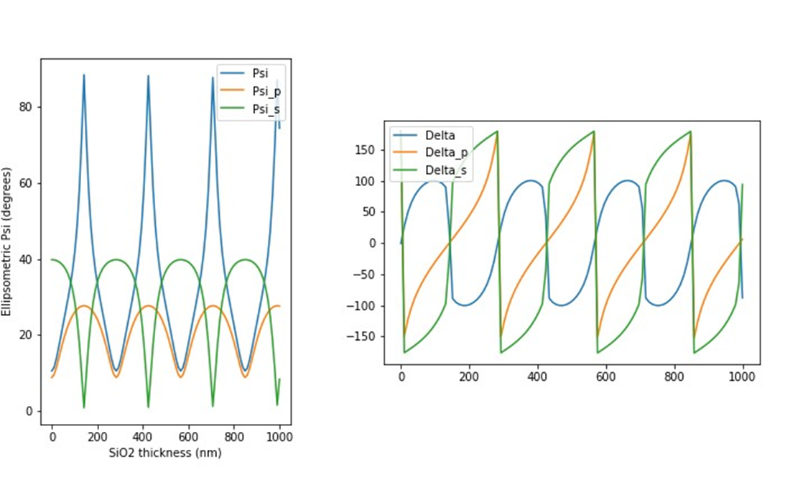
An alternative representation of the ellipsometric parameters is the 4x4 Mueller matrix,
which is derived from the reflection coefficients of p-polarized and s-polarized light.
The next figures show Mueller matrix of SiO2 film measured at a wavelength of 200-1000 nm,
an angle of incidence (AOI) of 60°, and an azimuth angle of 0°
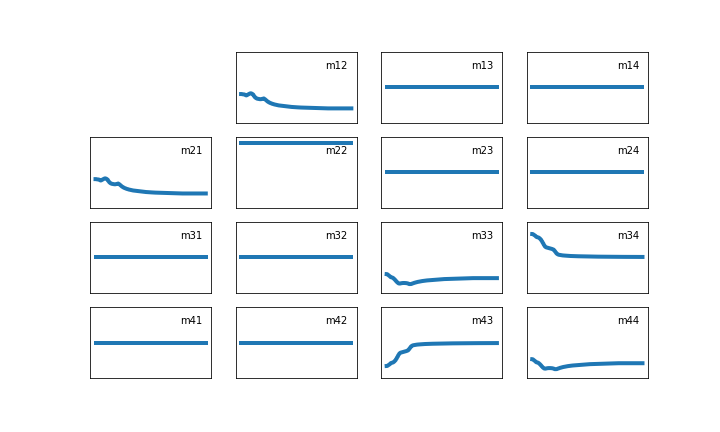
Film thickness=2nm
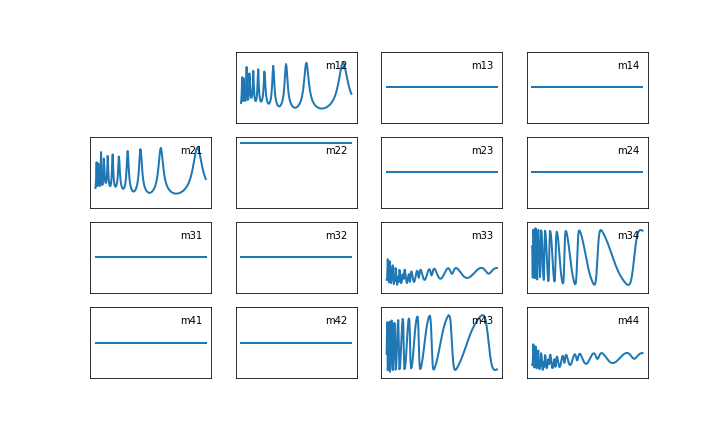
Film thickness=1000nm
**2D grating**
In this example, SolverM is used to simulate spectroscopic ellipsometry of 2D photoresist structures in
`Development of a broadband Mueller matrix ellipsometer as a powerful tool for nanostructure metrology`
by Liu et al.,2015.
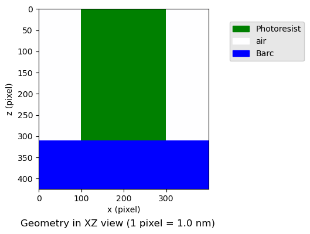
The optical properties of BARC and photoresist are calculated using Forouhi model and Tauc-Lorentz model,
respectively. The Mueller matrix in the following figure is simulated based on a structure with a
photoresist thickness of 115 nm, a BARC thickness of 310 nm, and a critical dimension (CD) of 200 nm.
It is noted that at azimuth=0, the off-diagonal Mueller ellements are zero.
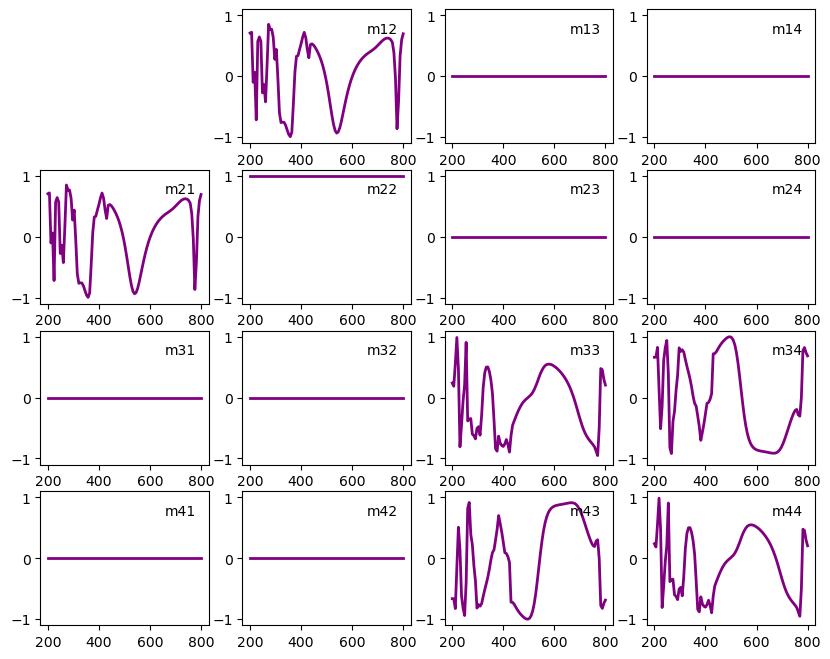
### **3.2 Mueller Matrix Ellipsometry**
In this example, SolverM is used to simulate Mueller ellipsometry of 2D structures in
`Development of a broadband Mueller matrix ellipsometer as a powerful tool for nanostructure metrology`
by Liu et al.,2015.
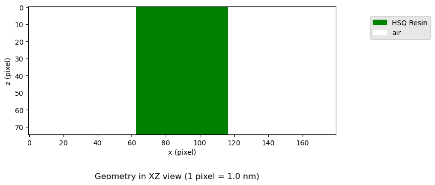
The Cauchy model is used to calculate the refractive index of HSQ resin.
In this case, with the azimuth angle of 60°, the off-diagonal Mueller matrix elements are non-zero,
resulting in a full Mueller matrix.
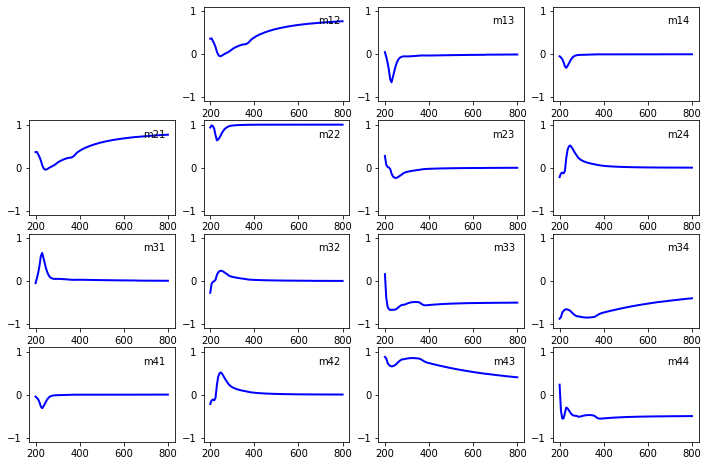
In another example, we reproduce the Mueller matrix obtained from ellipsometry measurements across a
wide range of azimuth angles for 2D Si gratings, adapted from `Comparison of spectroscopic Mueller polarimetry, standard
scatterometry, and real space imaging techniques (SEM and 3D-AFM) for dimensional characterization
of periodic structures`
by Martino et al.,SPIE Proc,2008.
**Simulation:**
SolverM requires about 1s to compute the Mueller matrix of AOI=45, Azimuth
=[0, 15, 30, 45, 60, 75, 90].
## **4. Mo/Si multilayer stacks**
SolverM is used to compute the reflectivity of a molybdenum/silicon (Mo/Si) multilayer stack,
commonly employed in current EUV systems. The stack consists of 40 alternating layers of Mo
and Si, with Mo layers 3 nm thick and Si layers 4 nm thick.
The refractive indices of Mo and Si are 0.91943 + 0.00663i and 0.99875 + 0.00183i, respectively.
Reflectivity is calculated as a function of wavelength, ranging from 11 to 16 nm,
at an incident angle of 6°. At the operating wavelength of 13.5 nm, the reflectivity reaches
approximately 70%
## **5. Au nanoantenna**
In this example, we simulate the reflectance/transmitance spectrum of arrays of gold nanobars periodically
(square lattice) placed on a silicon substrate. The Au plasmonic structure is designed to target the amide vibrational
modes of proteins. For further details, please refer to the research article
`Angle-and polarization-dependent collective excitation of plasmonic nanoarrays for surface enhanced
infrared spectroscopy`
by H.Altug et al.2011..
The figure below shows the reflectance of Au nanoantenna with periodic lengths of Px=Py=1750nm,
Wx=870nm, Wy=230nm, h=70nm. In the simulation, the refractive index of Au is taken from
Olmon et al., 2012.. The normal-incidence peak response of the Amide I protein is fully observed at wave number of
1650 cm-1.
## **6. EUV mask**
A typical extreme ultraviolet (EUV) mask consists of a TaN absorber layer on Mo/Si multilayers
to optimize optical efficiency. Simulating the near field of EUV masks with complex patterns is
crucial for computational lithography, as it enables the study of mask effects such as asymmetric shadowing, wavefront deformation,
and image contrast variations.
SolverM is used to simulate the electric field of an EUV mask with an absorber layer at an angle of
incidence (AOI) of 6°, and feature dimensions of wx=wy=50nm,The layer thickness is
h=50nm with a periodic length of Px=Py=150nm. The absorber layer is placed on 40 pairs of Mo/Si multilayers,
where the Mo layer is 3nm thick and the Si layer is 2nm thick. At an incident wavelength of 13.5 nm,
the refractive index of the TaN absorber is 0.9385+0.03776𝑖
Mo is 0.91943+0.00663i, and Si is 0.99875+0.00183i.
**Simulation time**: accelerated by GPU, SolverM computes the near field of the EUV mask in less than 1 second.
## **7. GaN super cell**
In this example, SolverM is used to simulate the diffraction efficiency at visible wavelengths of μm-scale 3D
metasurface arrays. The structure consists GaN cylindrical nanoridges on
top of Al2O3 substrate. For more information, refer to `Global optimization of metasurface designs using statistical
learning method`
by Elsawy et al., 2019..
A customized mask is used to define the GaN super cell pattern.
```python
layer_lth['mask']=customized mask
layer_lth['grating']={'eps': e_GaN,'name':'GaN'}
layer_lth['medium']={'eps': e_air,'name':'air'}
```
SolverM displays the GaN super cell in pixels (1 pixel =1 nm) for the simulation.
**Simulation time:**
It takes approximately 2s to compute the Transmittance and Diffraction Efficiency for
the first order of the TM polarized wave.
## **8. Si/Ge metasurfaces for wavelength-selective photodetectors **
In the example, SolverM is used to simulate the Si/Ge structure for wavelength-selective photodetectors in
the research article: `Robust Si/Ge heterostructure metasurfaces as building blocks for wavelength-selective
photodetectors`
by J. Schlipf et al., 2023..
The metasurface photodetector is based on a vertical Si/Ge heterostructure PIN diode
fabricated on a silicon-on-insulator (SOI) substrate.
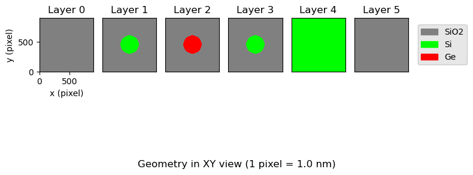
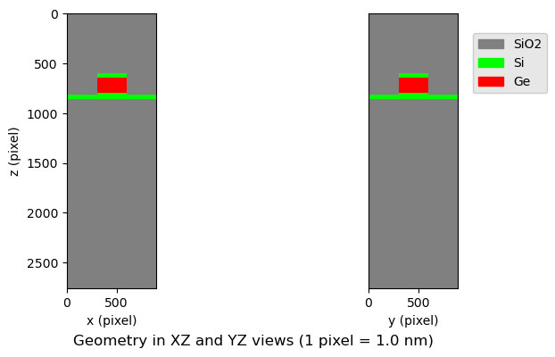
The simulation shows a clear absorption peak at 1400 nm with a peak absorption of 70%.
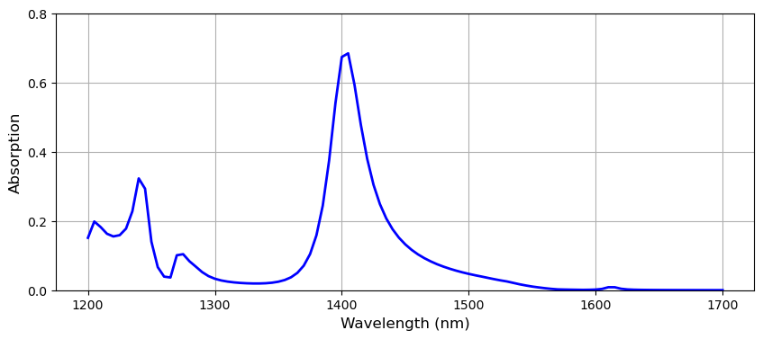
## **9. Metagrating deflector **
A metagrating deflector is designed to maximize light deflection at a desired diffraction order.
In this example, SolverM is used to simulate a metagrating deflector comprising a freeform silicon
pattern with periodic dimensions of Px = 1371 nm and Py = 525 nm. The design is referenced from
Photonics-opt-testbed (2023) .
The goal is to maximize the deflection of normally incident light at a wavelength of 1050 nm at
+1 diffraction order (deflection at a 50° angle).
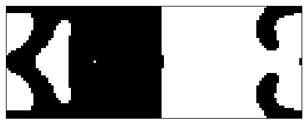
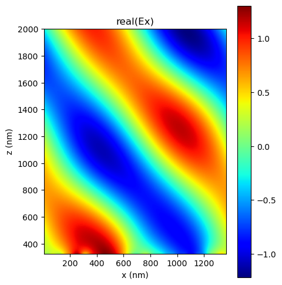
SolverM takes only 0.3 seconds for the forward simulation. The diffraction efficiency obtained is 93.6%,
consistent with Meep simulation results.
## **10. Conical diffraction**
In electromagnetic computations, simulations are typically performed using TE and/or TM polarizations.
In this example, SolverM demonstrates its capability to handle the general case of conical diffraction,
where polarization is defined by the polarization angle (β). Specifically, β = 0° and 90° correspond to
TM and TE polarizations, respectively.
The following figures show the diffraction efficiency of a binary dielectric grating for TE, TM,
and conical polarizations with a polarization angle of 45°. All simulations are performed at
an angle of incidence (AOI) of 10° and an azimuth angle of 30°
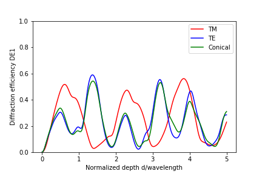
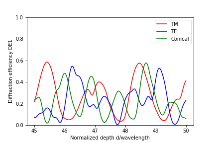
The results are consistent with the findings in `Formulation for stable and efficient implementation of
the rigorous coupled-wave analysis of binary gratings`
by Moharam et al.,1995 .
## **11. DistributedBraggReflector**
### **11.1 DBR**
A distributed Bragg reflector (DBR) is a multilayer structure comprising of alternating layers of low
refractive index and high refractive index. A nearly perfect reflection occurs when the thickness of
each layer is close to a quarter of the medium wavelength (nd = λ / 4) and is calculated by
Sheppard .,1995 :
where n0, n1,n2, n2 are the respective refractive indices of the reflectance medium, the two alternating
materials, and the substrate; and N is the number of repeated pairs of low/high refractive index material.
The frequency bandwidth Δf0 can be calculated by
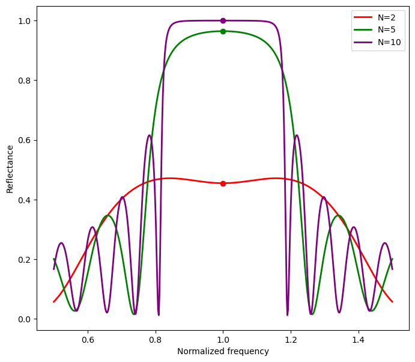
Reflectance of DBR of diffrent number of SiO2/TiO2 pair. The solid point represents
the theoretical reflectance at the central frequency, corresponding to a wavelength of 700 nm
### **11.2 High-Q DBR Cavity**
A high-Q microcavity is formed when one layer of a DBR has an anomalous thickness.
In this example, SolverM is used to simulate a DBR cavity where the central high-index layer
is half a material wavelength thick instead of the usual quarter wavelength.
This creates a high-Q mode at the central frequency.
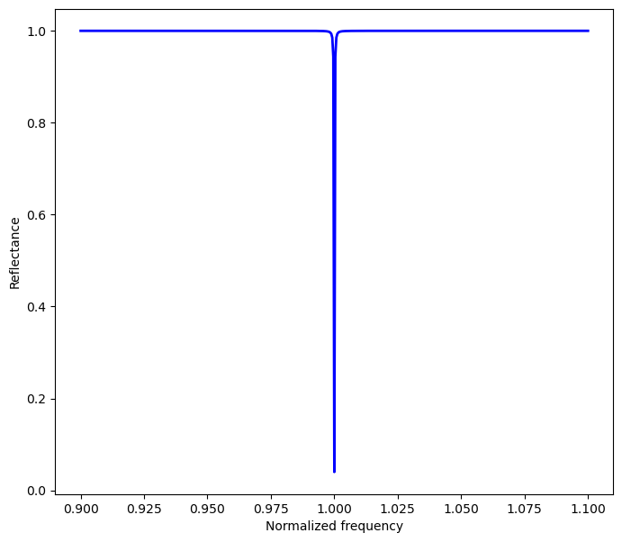
Reflectance of a high-Q DBR cavity with a cavity layer in the middle of 14 pairs of SiO2/TiO2.
## **12. Meta-atom**
Understanding the optical responses of a meta-atom is necessary in designing
large metasurfaces. Full-wave simulations of large metasurfaces are often constrained by computational resources.
Therefore, the conventional design approach involves creating a library of meta-atoms to map the desired optical
responses (e.g., phase shift) to specific meta-atom parameters. In this example, SolverM is used to
quickly generate the library of optical responses of meta-atoms.
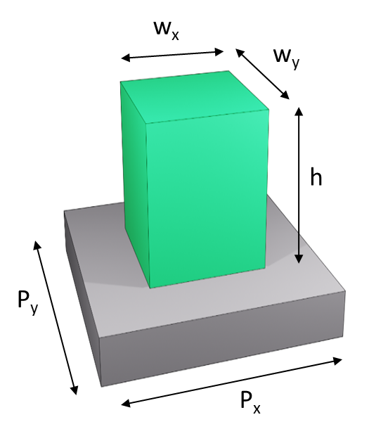
The figures show the imulated transmission and phase data for various nano-post widths W at wavelength=915nm,
showing consistency with the research articles `Increasing efficiency of high numerical aperture metasurfaces using
the grating averaging technique`
by Arbabi .,2020 :
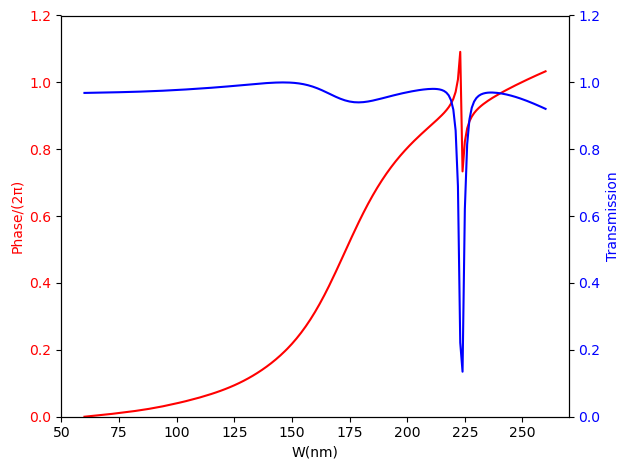
Periodic length = 400 nm, thickness = 500 nm
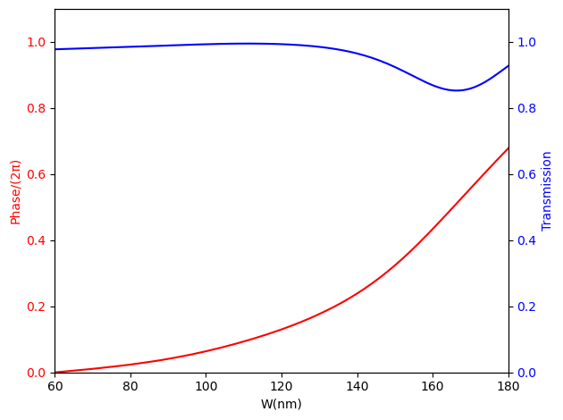
Periodic length = 350 nm, thickness = 590 nm
## **13. Microwave frequency selective surface**
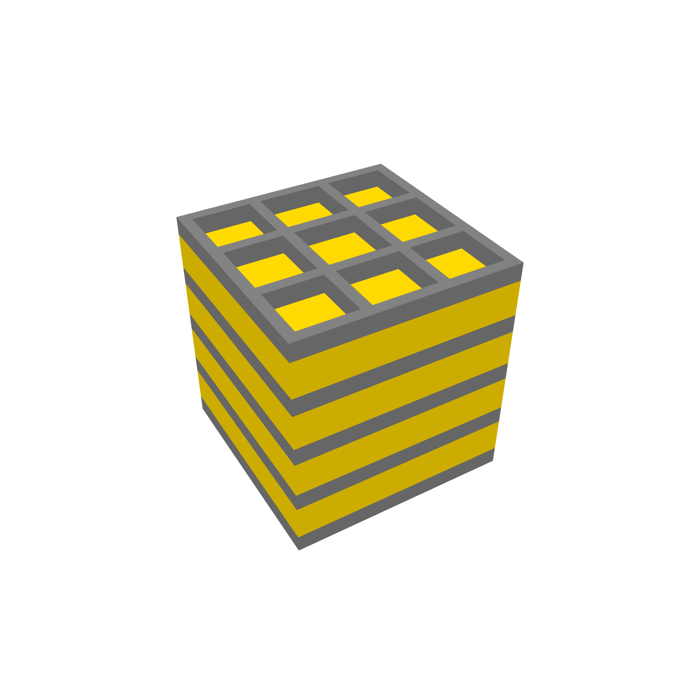
A Frequency Selective Surface (FSS) is an electromagnetic structure designed to to transmit specific frequencies
while reflecting or blocking other frequencies.In this example, SolverM is used to simulate a wideband
High frequency selective surfaces (HFSS) composed of
multilayered periodic grating slabs supported by homogeneous dielectric slabs.
The HFSS structure is on the millimeter scale, with unit cell dimensions of Dx = Dy = 10 mm.
The grating slab, with a thickness of 2 mm, consists of a dielectric ring with a relative permittivity
ε_rb=12. The air hole inside the dielectric ring has dimensions of Lx = Ly = 7 mm.
The supporting homogeneous dielectric slabs have a dielectric constant of ε_r = 2.2 and a thickness of h2 = 4 mm.
The Figure below shows the transmission and reflection of the HFSS for the case of normally incident plane wave.
The results are consistent with findings reported in `Modal analysis of a two-dimensional dielectric grating
slab excited by an obliquely incident plane wave by Attiya and Kishk., 2008.`
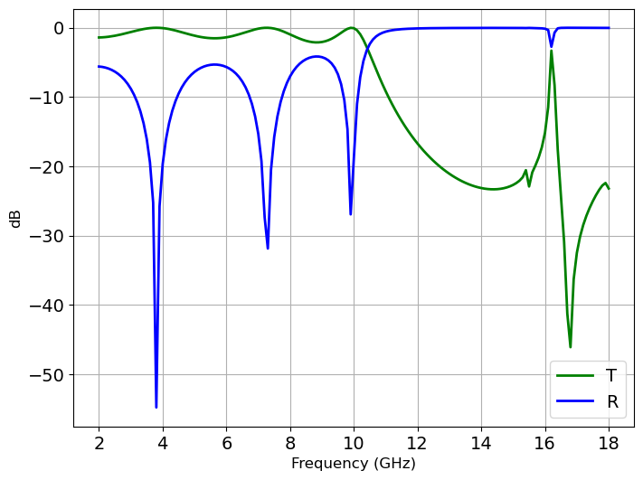
# **Benchmark**
The following sections provide benchmarks for SolverM, validated through published documentation and
rigorous simulation methods. Periodic structures are used in the benchmark with Rigorous Coupled-Wave Analysis (RCWA)
and large structures are used in the benchmark with Finite-Difference Time-Domain (FDTD).
We try to use fast and accessible versions of these methods, including
Tf-rcwa (Tensorflow) ,
Torcwa (Pytorch),
RCWA-Julia
for RCWA method and
MEEP ,
TIDY3D (GPU-FDTD) for FDTD method.
However, it's important to note that **comparisons are relative**, as variations in numerical
efficiency can arise from differences in simulation methods, programming languages,
simulation targets, computer resources... Our primary goal is to develop efficient
solutions for complex 3D nanostructures.
**Periodic structures:** SolverM is up to 100 times faster in simulating theorical and practical structures.
It is note that the numerical efficiency can be higher in tasks requiring high Fourier truncated numbers in RCWA method,
often encountered in simulations of large unit cells or those demanding high accuracy.
# **Contact**
While SolverM demonstrates impressive performances, it is still in its early stages and requires further development.
Please feel free to reach out for more information:
**Email:** phamhoanglam.fr@gmail.com